Unit 6
General Principles and Processes of Isolation of Elements
General Principles and Processes of Isolation of Elements

Objectives
After studying this Unit, you will be able to
• explain the terms minerals, ores, concentration, benefaction, calcination, roasting, refining, etc.;
• understand the principles of oxidation and reduction as applied to the extraction procedures;
• apply the thermodynamic concepts like that of Gibbs energy and entropy to the principles of extraction of Al, Cu, Zn and Fe;
• explain why reduction of certain oxides like Cu2O is much easier than that of Fe2O3;
• explain why CO is a favourable reducing agent at certain temperatures while coke is better in some other cases;
• explain why specific reducing agents are used for the reduction purposes.
Thermodynamics illustrates why only a certain reducing element and a minimum specific temperature are suitable for reduction of a metal oxide to the metal in an extraction.
A few elements like carbon, sulphur, gold and noble gases, occur in free state while others in combined forms in the earth’s crust. The extraction and isolation of an element from its combined form involves various principles of chemistry. A particular element may occur in a variety of compounds. The process of metallurgy and isolation should be such that it is chemically feasible and commercially viable. Still, some general principles are common to all the extraction processes of metals. For obtaining a particular metal, first we look for minerals which are naturally occurring chemical substances in the earth’s crust obtainable by mining. Out of many minerals in which a metal may be found, only a few are viable to be used as sources of that metal. Such minerals are known as ores.
Rarely, an ore contains only a desired substance. It is usually contaminated with earthly or undesired materials known as gangue. The extraction and isolation of metals from ores involve the following major steps:
• Concentration of the ore,
• Isolation of the metal from its concentrated ore, and
• Purification of the metal.
The entire scientific and technological process used for isolation of the metal from its ores is known as metallurgy.
In the present Unit, first we shall describe various steps for effective concentration of ores. After that we shall discuss the principles of some of the common metallurgical processes. Those principles shall include the thermodynamic and electrochemical aspects involved in the effective reduction of the concentrated ore to the metal.
6.1 Occurrence of Metals
Elements vary in abundance. Among metals, aluminium is the most abundant. It is the third most abundant element in earth’s crust (8.3% approx. by weight). It is a major component of many igneous minerals including mica and clays. Many gemstones are impure forms of Al2O3 and the impurities range from Cr (in ‘ruby’) to Co (in ‘sapphire’). Iron is the second most abundant metal in the earth’s crust. It forms a variety of compounds and their various uses make it a very important element. It is one of the essential elements in biological systems as well.
The principal ores of aluminium, iron, copper and zinc have been given in Table 6.1.
Table 6.1: Principal Ores of Some Important Metals
|
Ores
|
Composition
|
| Aluminium | Bauxite |
AlOx(OH)3-2x [Al2 (OH)4 Si2O5] |
| Iron |
Haematitte Magnette Siderite Iron pyrites |
Fe2O3 Fe3O4 FeCO3 FeS2 |
| Copper |
Copper pyrites Malachite Cuprite Copper glance |
CuFeS2 CuCO3.Cu(OH)2 Cu2O Cu2S |
| Zinc |
Zinc blende or Sphalerite Calamine Zincite |
ZnS ZnCO3 ZnO |
For the purpose of extraction, bauxite is chosen for aluminium. For iron, usually the oxide ores which are abundant and do not produce polluting gases (like SO2 that is produced in case iron pyrites) are taken. For copper and zinc, any of the listed ores (Table 6.1) may be used depending upon availability and other relevant factors. Before proceeding for concentration, ores are graded and crushed to reasonable size.
6.2. Concentration of Ores
Removal of the unwanted materials (e.g., sand, clays, etc.) from the ore is known as concentration, dressing or benefaction. It involves several steps and selection of these steps depends upon the differences in physical properties of the compound of the metal present and that of the gangue. The type of the metal, the available facilities and the environmental factors are also taken into consideration. Some of the important procedures are described below.
6.2.1 Hydraulic Washing
This is based on the differences in gravities of the ore and the gangue particles. It is therefore a type of gravity separation. In one such process, an upward stream of running water is used to wash the powdered ore. The lighter gangue particles are washed away and the heavier ores are left behind.
6.2.2 Magnetic Separation
This is based on differences in magnetic properties of the ore components. If either the ore or the gangue (one of these two) is capable of being attracted by a magnetic field, then such separations are carried out (e.g., in case of iron ores). The ground ore is carried on a conveyer belt which passes over a magnetic roller (Fig.6.1).
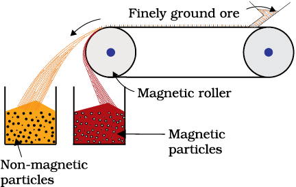
Fig. 6.1: Magnetic separation (schematic)
6.2.3 Froth Floatation Method
This method has been in use for removing gangue from sulphide ores. In this process, a suspension of the powdered ore is made with water. To it, collectors and froth stabilisers are added. Collectors (e. g., pine oils, fatty acids, xanthates, etc.) enhance non-wettability of the mineral particles and froth stabilisers (e. g., cresols, aniline) stabilise the froth.
The mineral particles become wet by oils while the gangue particles by water. A rotating paddle agitates the mixture and draws air in it. As a result, froth is formed which carries the mineral particles. The froth is light and is skimmed off. It is then dried for recovery of the ore particles.
Sometimes, it is possible to separate two sulphide ores by adjusting proportion of oil to water or by using ‘depressants’. For example, in case of an ore containing ZnS and PbS, the depressant used is NaCN. It selectively prevents ZnS from coming to the froth but allows PbS to come with the froth.
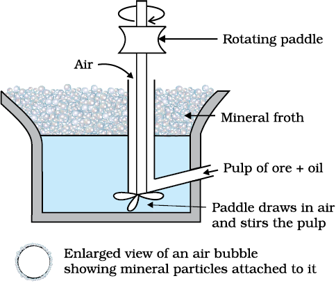
Fig 6.2: Forth floatation process (schemattic)
The Innovative Washerwoman
One can do wonders if he or she has a scientific temperament and is attentive to observations. A washerwoman had an innovative mind too. While washing a miner's overalls, she noticed that sand and similar dirt fell to the bottom of the washtub. What was peculiar, the copper bearing compounds that had come to the clothes from the mines, were caught in the soapsuds and so they came to the top. One of her clients was a chemist, Mrs. Carrie Everson. The washerwoman told her experience to Mrs. Everson. The latter thought that the idea could be used for separating copper compounds from rocky and earth materials on large scale. This way an invention was born. At that time only those ores were used for extraction of copper, which contained large amounts of the metal. Invention of the Froth Floatation Method made copper mining profitable even from the low-grade ores. World production of copper soared and the metal became cheaper.
6.2.4 Leaching
Leaching is often used if the ore is soluble in some suitable solvent. The following examples illustrate the procedure:
(a) Leaching of alumina from bauxite
The principal ore of aluminium, bauxite, usually contains SiO2, iron oxides and titanium oxide (TiO2) as impurities. Concentration is carried out by digesting the powdered ore with a concentrated solution of NaOH at 473 – 523 K and 35 – 36 bar pressure. This way, Al2O3 is leached out as sodium aluminate (and SiO2 too as sodium silicate) leaving the impurities behind:
Al2O3(s) + 2NaOH(aq) + 3H2O(l) → 2Na[Al(OH) 4](aq) (6.1)
The aluminate in solution is neutralised by passing CO2 gas and hydrated Al2O3 is precipitated. At this stage, the solution is seeded with freshly prepared samples of hydrated Al2O3 which induces the precipitation:
2Na[Al(OH)4](aq) + CO2(g) → Al2O3.xH2O(s) + 2NaHCO3 (aq) (6.2)
The sodium silicate remains in the solution and hydrated alumina is filtered, dried and heated to give back pure Al2O3:
Al2O3.xH2O(s)  Al2O3(s) + xH2O(g) (6.3)
Al2O3(s) + xH2O(g) (6.3)
(b) Other examples
In the metallurgy of silver and that of gold, the respective metal is leached with a dilute solution of NaCN or KCN in the presence of air (for O2) from which the metal is obtained later by replacement:
4M(s) + 8CN–(aq)+ 2H2O(aq) + O2(g) → 4[M(CN)2]– (aq) + 4OH–(aq) (M= Ag or Au) (6.4)
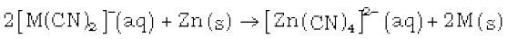 (6.5)
Intext Questions
6.1 Which of the ores mentioned in Table 6.1 can be concentrated by magnetic separation method?
6.2 What is the significance of leaching in the extraction of aluminium?
6.3 Extraction of Crude metal from Concentrated Ore
The concentrated ore must be converted into a form which is suitable for reduction. Usually the sulphide ore is converted to oxide before reduction. Oxides are easier to reduce (for the reason see box). Thus isolation of metals from concentrated ore involves two major steps viz.,
(a) conversion to oxide, and
(b) reduction of the oxide to metal.
(a) Conversion to oxide
(i) Calcination: Calcinaton involves heating when the volatile matter escapes leaving behind the metal oxide:
Fe2O3.xH2O(s)  Fe2O3 (s) + xH2O(g) (6.6)
Fe2O3 (s) + xH2O(g) (6.6)
ZnCO3 (s)  ZnO(s) + CO2(g) (6.7)
ZnO(s) + CO2(g) (6.7)
CaCO3.MgCO3(s)  CaO(s) + MgO(s ) + 2CO2(g) (6.8)
CaO(s) + MgO(s ) + 2CO2(g) (6.8)
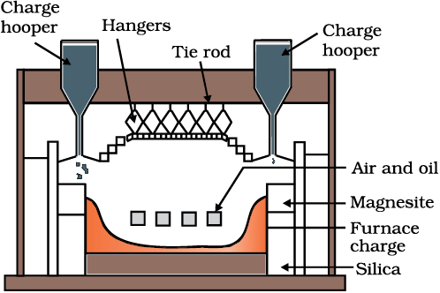
Fig. 6.3: A section of a modern reverberatory furnace
(ii) Roasting: In roasting, the ore is heated in a regular supply of air in a furnace at a temperature below the melting point of the metal. Some of the reactions involving sulphide ores are:
2ZnS + 3O2 → 2ZnO + 2SO2 (6.9)
2PbS + 3O2 → 2PbO + 2SO2 (6.10)
2Cu2S + 3O2 → 2Cu2O + 2SO2 (6.11)
The sulphide ores of copper are heated in reverberatory furnace. If the ore contains iron, it is mixed with silica before heating. Iron oxide ‘slags of’* as iron silicate and copper is produced in the form of copper matte which contains Cu2S and FeS.
FeO + SiO2 → FeSiO3 (6.12)
(slag)
The SO2 produced is utilised for manufacturing H2SO4 .
(b) Reduction of oxide to the metal
Reduction of the metal oxide usually involves heating it with some other substance acting as a reducing agent (C or CO or even another metal). The reducing agent (e.g., carbon) combines with the oxygen of the metal oxide.
MxOy + yC → xM + y CO (6.13)
Some metal oxides get reduced easily while others are very difficult to be reduced (reduction means electron gain or electronation). In any case, heating is required. To understand the variation in the temperature requirement for thermal reductions (pyrometallurgy) and to predict which element will suit as the reducing agent for a given metal oxide (MxOy), Gibbs energy interpretations are made.
6.4 Thermodynamic Principles of metallurgy
Some basic concepts of thermodynamics help us in understanding the theory of metallurgical transformations. Gibbs energy is the most significant term here.The change in Gibbs energy, ∆G for any process at any specified temperature, is described by the equation:
∆G = ∆H – T∆S (6.14)
where, ∆H is the enthalpy change and ∆S is the entropy change for the process. For any reaction, this change could also be explained through the equation:
∆Go = – RTlnK (6.15)
where, K is the equilibrium constant of the ‘reactant – product’ system at the temperature,T. A negative ∆G implies a +ve K in equation 6.15. And this can happen only when reaction proceeds towards products. From these facts we can make the following conclusions:
During metallurgy, ‘flux’ is added which combines with ‘gangue’ to form ‘slag’. Slag separates more easily from the ore than the gangue. This way, removal of gangue becomes easier.
1. When the value of ∆G is negative in equation 6.14, only then the reaction will proceed. If ∆S is positive, on increasing the temperature (T), the value of T∆S would increase (∆H < T∆S) and then ∆Go will become –ve.
2. If reactants and products of two reactions are put together in a system and the net ∆G of the two possible reactions is –ve, the overall reaction will occur. So the process of interpretation involves coupling of the two reactions, getting the sum of their ∆G and looking for its magnitude and sign. Such coupling is easily understood through Gibbs energy (∆G) vs T plots for formation of the oxides (Fig. 6.4).
Ellingham Diagram
The graphical representation of Gibbs energy was first used by H.J.T.Ellingham This provides a sound basis for considering the choice of reducing agent in the reduction of oxides. This is known as Ellingham Diagram. Such diagrams help us in predicting the feasibility of thermal reduction of an ore. The criterion of feasibility is that at a given temperature, Gibbs energy of the reaction must be negative.
(a) Ellingham diagram normally consists of plots of ΔfGo vs T for formation of oxides of elements i.e., for the reaction,
2xM(s) + O2(g) → 2MxO(s)
In this reaction, the gaseous amount (hence molecular randomness) is decreasing from left to right due to the consumption of gases leading to a –ve value of ΔS which changes the sign of the second term in equation (6.14). Subsequently ΔG shifts towards higher side despite rising T (normally, ΔG decreases i.e., goes to lower side with increasing temperature). The result is +ve slope in the curve for most of the reactions shown above for formation of MxO(s).
(b) Each plot is a straight line except when some change in phase (s → liq or liq→ g) takes place. The temperature at which such change occurs, is indicated by an increase in the slope on +ve side (e.g., in the Zn, ZnO plot, the melting is indicated by an abrupt change in the curve).
(c) There is a point in a curve below which ΔG is negative (So MxO is stable). Above this point, MxO will decompose on its own.
(d) In an Ellingham diagram, the plots of ΔGo for oxidation (and therefore reduction of the corresponding species) of common metals and some reducing agents are given. The values of Δf Go, etc.(for formation of oxides) at different temperatures are depicted which make the interpretation easy.
(e) Similar diagrams are also constructed for sulfides and halides and it becomes clear why reductions of MxS is difficult. There, the Δf Go of MxS is not compensated.
Limitations of Ellingham Diagram
1. The graph simply indicates whether a reaction is possible or not i.e., the tendency of reduction with a reducing agent is indicated. This is so because it is based only on the thermodynamic concepts. It does not say about the kinetics of the reduction process (Cannot answer questions like how fast it could be ?).
2. The interpretation of ΔGV is based on K (ΔGo = – RT lnK). Thus it is presumed that the reactants and products are in equilibrium:
MxO + Ared l xM + AOox
This is not always true because the reactant/product may be solid. [However it explains how the reactions are sluggish when every species is in solid state and smooth when the ore melts down.It is interestng to note here that ΔH (enthalpy change) and the ΔS (entropy change) values for any chemical reaction remain nearly constant even on varying temperature. So the only dominant variable in equation(6.14) becomes T. However, ΔS depends much on the physical state of the compound. Since entropy depends on disorder or randomness in the system, it will increase if a compound melts (s→ l ) or vapourises (l→ g) since molecular randomness increases on changing the phase from solid to liquid or from liquid to gas].
The reducing agent forms its oxide when the metal oxide is reduced. The role of reducing agent is to provide ΔGo negative and large enough to make the sum of ΔGV of the two reactions (oxidation of the reducing agent and reduction of the metal oxide) negative.
As we know, during reduction, the oxide of a metal decomposes:
MxO(s) → xM (solid or liq) + 1/2 O2 (g) (6.16)
The reducing agent takes away the oxygen. Equation 6.16 can be visualised as reverse of the oxidation of the metal. And then, the Δf Go value is written in the usual way:
xM(s or l) + 1/2 O2(g) → MxO(s) [ΔGo (M,MxO)] (6.17)
If reduction is being carried out through equation 6.16, the oxidation of the reducing agent (e.g., C or CO) will be there:
C(s) + 1/2 O2(g) → CO(g) [ΔG(C, CO)] (6.18)
CO(g) + 1/2 O2(g) → CO2(g) [ΔG(CO, CO2)] (6.19)
If carbon is taken, there may also be complete oxidation of the element to CO2:
1/2 C(s) + 1/2 O2(g) → 1/2 CO2(g) [ 1/2 ΔG(C, CO2)] (6.20)
On subtracting equation 6.17 [it means adding its negative or the reverse form as in equation 6.16] from one of the three equations, we get:
MxO(s) + C(s) → xM(s or l) + CO(g) (6.21)
MxO(s) + CO(g) → xM(s or l) + CO2(g) (6.22)
MxO(s) + 1/2 C(s) → xM(s or l) + 1/ 2 CO2(g) (6.23)
These reactions describe the actual reduction of the metal oxide, MxO that we want to accomplish. The ΔrG0 values for these reactions in general, can be obtained by similar subtraction of the corresponding Δf G0 values.
As we have seen, heating (i.e., increasing T) favours a negative value of ΔrG0. Therefore, the temperature is chosen such that the sum of ΔrG0 in the two combined redox process is negative. In ΔrG0 vs T plots, this is indicated by the point of intersection of the two curves (curve for MxO and that for the oxidation of the reducing substance). After that point, the ΔrG0 value becomes more negative for the combined process including the reduction of MxO. The difference in the two ΔrG0
values after that point determines whether reductions of the oxide of the upper line is feasible by the element represented by the lower line. If the difference is large, the reduction is easier.
Example 6.1
Suggest a condition under which magnesium could reduce alumina.
Solution
The two equations are:
(a) 4/3 Al + O2 → 2/3 Al2O3 (b) 2Mg +O2 → 2MgO
At the point of intersection of the Al2O3 and MgO curves (marked "A" in diagram 6.4), the ΔG0 becomes ZERO for the reaction:
2/3 Al2 O3 +2Mg → 2MgO +4/3 Al
Below that point magnesium can reduce alumina.
Example 6.2
Although thermodynamically feasible, in practice, magnesium metal is not used for the reduction of alumina in the metallurgy of aluminium. Why ?
Solution
Temperatures below the point of intersection of Al2O3 and MgO curves, magnesium can reduce alumina. But the process will be uneconomical.
Example 6.3
Why is the reduction of a metal oxide easier if the metal formed is in liquid state at the temperature of reduction?
Solution
The entropy is higher if the metal is in liquid state than when it is in solid state. The value of entropy change (ΔS) of the reduction process is more on +ve side when the metal formed is in liquid state and the metal oxide being reduced is in solid state. Thus the value of ΔG0becomes more on negative side and the reduction becomes easier.
6.4.1 Applications
(a) Extraction of iron from its oxides
Oxide ores of iron, after concentration through calcination/roasting (to remove water, to decompose carbonates and to oxidise sulphides) are mixed with limestone and coke and fed into a Blast furnace from its top. Here, the oxide is reduced to the metal. Thermodynamics helps us to understand how coke reduces the oxide and why this furnace is chosen. One of the main reduction steps in this process is:
FeO(s) + C(s) → Fe(s/l) + CO (g) (6.24)
It can be seen as a couple of two simpler reactions. In one, the reduction of FeO is taking place and in the other, C is being oxidised to CO:
FeO(s) → Fe(s) + 1/2 O2(g) [ΔG(FeO, Fe)] (6.25)
C(s) + 1/2 O2 (g) → CO (g) [ΔG (C, CO)] (6.26)
When both the reactions take place to yield the equation (6.24), the net Gibbs energy change becomes:
ΔG (C, CO) + ΔG (FeO, Fe) = ΔrG (6.27)
Naturally, the resultant reaction will take place when the right hand side in equation 6.27 is negative. In ΔG0 vs T plot representing reaction 6.25, the plot goes upward and that representing the change C→ CO (C,CO) goes downward. At temperatures above 1073K (approx.), the C,CO line comes below the Fe,FeO line [ΔG (C, CO) < ΔG(Fe, FeO)]. So in this range, coke will be reducing the FeO and will itself be oxidised to CO. In a similar way the reduction of Fe3O4 and Fe2O3 at relatively lower temperatures by CO can be explained on the basis of lower lying points of intersection of their curves with the CO, CO2 curve in Fig. 6.4.
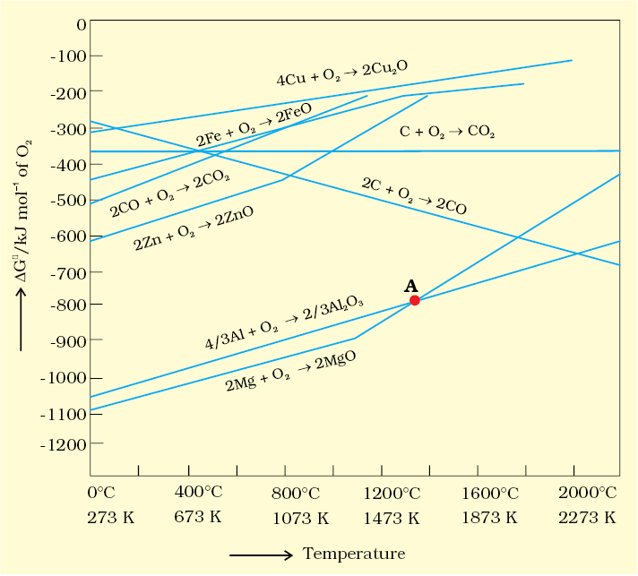
Fig. 6.4: Gibbs energy (ΔG0) vs T plots (schematic) for formation of some oxides (Ellingham diagram)
In the Blast furnace, reduction of iron oxides takes place in different temperature ranges. Hot air is blown from the bottom of the furnace and coke is burnt to give temperature upto about 2200K in the lower portion itself. The burning of coke therefore supplies most of the heat required in the process. The CO and heat moves to upper part of the furnace. In upper part, the temperature is lower and the iron oxides (Fe2O3 and Fe3O4) coming from the top are reduced in steps to FeO.
Thus, the reduction reactions taking place in the lower temperature range and in the higher temperature range, depend on the points of corresponding intersections in the ΔrG0 vs T plots. These reactions can be summarised as follows:
At 500 – 800 K (lower temperature range in the blast furnace)–
3 Fe2O3 + CO → 2 Fe3O4 + CO2 (6.28)
Fe3O4 + 4 CO → 3Fe + 4 CO2 (6.29)
Fe2O3 + CO → 2FeO + CO2 (6.30)
At 900 – 1500 K (higher temperature range in the blast furnace):
C + CO2 → 2 CO (6.31)
FeO + CO → Fe + CO2 (6.32)
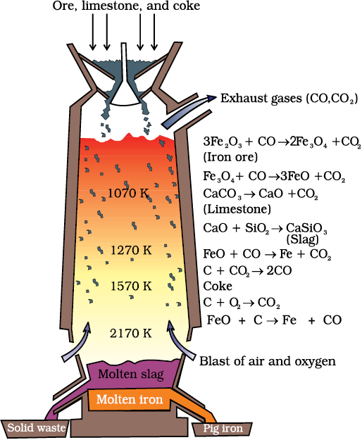
Fig. 6.5: Blast furnace
Limestone is also decomposed to CaO which removes silicate impurity of the ore as slag. The slag is in molten state and separates out from iron.
The iron obtained from Blast furnace contains about 4% carbon and many impurities in smaller amount (e.g., S, P, Si, Mn). This is known as pig iron and cast into variety of shapes. Cast iron is different from pig iron and is made by melting pig iron with scrap iron and coke using hot air blast. It has slightly lower carbon content (about 3%) and is extremely hard and brittle.
Further Reductions
Wrought iron or malleable iron is the purest form of commercial iron and is prepared from cast iron by oxidising impurities in a reverberatory furnace lined with haematite. This haematite oxidises carbon to carbon monoxide:
Fe2O3 + 3 C → 2 Fe + 3 CO (6.33)
Limestone is added as a flux and sulphur, silicon and phosphorus are oxidised and passed into the slag. The metal is removed and freed from the slag by passing through rollers.
(b) Extraction of copper from cuprous oxide [copper(I) oxide]
In the graph of ΔrG0 vs T for formation of oxides (Fig. 6.4), the Cu2O line is almost at the top. So it is quite easy to reduce oxide ores of copper directly to the metal by heating with coke (both the lines of C, CO and C, CO2 are at much lower positions in the graph particularly after 500 – 600K). However most of the ores are sulphide and some may also contain iron. The sulphide ores are roasted/smelted to give oxides:
2Cu2S + 3O2 → 2Cu2O + 2SO2 (6.34)
The oxide can then be easily reduced to metallic copper using coke:
Cu2O + C → 2 Cu + CO (6.35)
In actual process, the ore is heated in a reverberatory furnace after mixing with silica. In the furnace, iron oxide 'slags of' as iron silicate and copper is produced in the form of copper matte. This contains Cu2S and FeS.
FeO + SiO2 → FeSiO3 (6.36)
(Slag)
Copper matte is then charged into silica lined convertor. Some silica is also added and hot air blast is blown to convert the remaining FeS, FeO and Cu2S/Cu2O to the metallic copper. Following reactions take place:
2FeS + 3O2 → 2FeO + 2SO2 (6.37)
FeO + SiO2 → FeSiO3 (6.38)
2Cu2S + 3O2 → 2Cu2O + 2SO2 (6.39)
2Cu2O + Cu2S → 6Cu + SO2 (6.40)
The solidified copper obtained has blistered appearance due to the evolution of SO2 and so it is called blister copper.
(c) Extraction of zinc from zinc oxide
The reduction of zinc oxide is done using coke. The temperature in this case is higher than that in case of copper. For the purpose of heating, the oxide is made into brickettes with coke and clay.
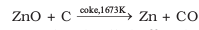 (6.41)
The metal is distilled off and collected by rapid chilling.
Intext Questions
6.3 The reaction,
Cr2 O3 + 2 Al → Al2 O3 + 2 Cr (ΔG0 = – 421 kJ)
is thermodynamically feasible as is apparent from the Gibbs energy value. Why does it not take place at room temperature?
6.4 Is it true that under certain conditions, Mg can reduce Al2O3 and Al can reduce MgO? What are those conditions?
6.5 Electrochemical Principles of Metallurgy
We have seen how principles of thermodyamics are applied to pyrometallurgy. Similar principles are effective in the reductions of metal ions in solution or molten state. Here they are reduced by electrolysis or by adding some reducing element.
In the reduction of a molten metal salt, electrolysis is done. Such methods are based on electrochemical principles which could be understood through the equation,
ΔG0 = – nE0F (6.42)
here n is the number of electrons and E0 is the electrode potential of the redox couple formed in the system. More reactive metals have large negative values of the electrode potential. So their reduction is difficult. If the difference of two E0 values corresponds to a positive E0 and consequently negative ΔG0 in equation 6.42, then the less reactive metal will come out of the solution and the more reactive metal will go to the solution, e.g.,
Cu2+ (aq) + Fe(s) → Cu(s) + Fe2+ (aq) (6.43)
In simple electrolysis, the Mn+ ions are discharged at negative electrodes (cathodes) and deposited there. Precautions are taken considering the reactivity of the metal produced and suitable materials are used as electrodes. Sometimes a flux is added for making the molten mass more conducting.
Aluminium
In the metallurgy of aluminium, purified Al2O3 is mixed with Na3AlF6 or CaF2 which lowers the melting point of the mix and brings conductivity. The fused matrix is electrolysed. Steel vessel with lining of carbon acts as cathode and graphite anode is used. The overall reaction may be written as:
2Al2O3 + 3C → 4Al + 3CO2 (6.44)
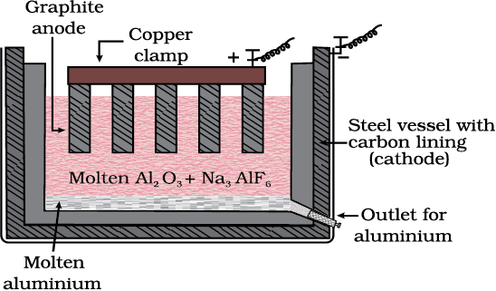
Fig. 6.6: Electrolytic cell for the extraction of aluminium
This process of electrolysis is widely known as Hall-Heroult process.
Thus electrolysis of the molten mass is carried out in an electrolytic cell using carbon electrodes. The oxygen liberated at anode reacts with the carbon of anode producing CO and CO2. This way for each kg of aluminium produced, about 0.5 kg of carbon anode is burnt away. The electrolytic reactions are:
Cathode: Al3+ (melt) + 3e– → Al(l) (6.45)
Anode: C(s) + O2– (melt) → CO(g) + 2e– (6.46)
C(s) + 2O2– (melt) → CO2 (g) + 4e– (6.47)
Copper from Low Grade Ores and Scraps
Copper is extracted by hydrometallurgy from low grade ores. It is leached out using acid or bacteria. The solution containing Cu2+ is treated with scrap iron or H2 (equations 6.42; 6.48).
Cu2+(aq) + H2(g) → Cu(s) + 2H+ (aq) (6.48)
Example 6.4
At a site, low grade copper ores are available and zinc and iron scraps are also available. Which of the two scraps would be more suitable for reducing the leached copper ore and why?
Solution
Zinc being above iron in the electrochemical series (more reactive metal is zinc), the reduction will be faster in case zinc scraps are used. But zinc is costlier metal than iron so using iron scraps will be advisable and advantageous.
6.6 Oxidation Reduction
Besides reductions, some extractions are based on oxidation particularly for non-metals. A very common example of extraction based on oxidation is the extraction of chlorine from brine (chlorine is abundant in sea water as common salt) .
2Cl–(aq) + 2H2O(l) → 2OH–(aq) + H2(g) + Cl2(g) (6.49)
The ΔG0 for this reaction is + 422 kJ. When it is converted to E0 (using ΔG0 = – nE0F), we get E0 = – 2.2 V. Naturally, it will require an external e.m.f. that is greater than 2.2 V. But the electrolysis requires an excess potential to overcome some other hindering reactions. Thus, Cl2 is obtained by electrolysis giving out H2 and aqueous NaOH as byproducts. Electrolysis of molten NaCl is also carried out. But in that case, Na metal is produced and not NaOH.
As studied earlier, extraction of gold and silver involves leaching the metal with CN–. This is also an oxidation reaction (Ag → Ag+ or Au → Au+). The metal is later recovered by displacement method.
4Au(s) + 8CN–(aq) + 2H2O(aq) + O2(g) → 4[Au(CN)2]–(aq) + 4OH–(aq) (6.50)
2[Au(CN)2]–(aq) + Zn(s) → 2Au(s) + [Zn(CN)4]2– (aq) (6.51)
In this reaction zinc acts as a reducing agent.
6.7 Refining
A metal extracted by any method is usually contaminated with some impurity. For obtaining metals of high purity, several techniques are used depending upon the differences in properties of the metal and the impurity. Some of them are listed below.
(a) Distillation (b) Liquation
(c) Electrolysis (d) Zone refining
(e) Vapour phase refining (f ) Chromatographic methods
These are described in detail here.
(a) Distillation
This is very useful for low boiling metals like zinc and mercury. The impure metal is evaporated to obtain the pure metal as distillate.
(b) Liquation
In this method a low melting metal like tin can be made to flow on a sloping surface. In this way it is separated from higher melting impurities.
(c) Electrolytic refining
In this method, the impure metal is made to act as anode. A strip of the same metal in pure form is used as cathode. They are put in a suitable electrolytic bath containing soluble salt of the same metal. The more basic metal remains in the solution and the less basic ones go to the anode mud. This process is also explained using the concept of electrode potential, over potential, and Gibbs energy which you have seen in previous sections. The reactions are:
Anode: M → Mn+ + ne–
Cathode: Mn+ + ne– → M (6.52)
Copper is refined using an electrolytic method. Anodes are of impure copper and pure copper strips are taken as cathode. The electrolyte is acidified solution of copper sulphate and the net result of electrolysis is the transfer of copper in pure form from the anode to the cathode:
Anode: Cu → Cu2+ + 2 e–
Cathode: Cu2+ + 2e– → Cu (6.53)
Impurities from the blister copper deposit as anode mud which contains antimony, selenium, tellurium, silver, gold and platinum; recovery of these elements may meet the cost of refining.
Zinc may also be refined this way.
(d) Zone refining
This method is based on the principle that the impurities are more soluble in the melt than in the solid state of the metal. A circular mobile heater is fixed at one end of a rod of the impure metal (Fig. 6.7). The molten zone moves along with the heater which is moved forward. As the heater moves forward, the pure metal crystallises out of the melt and the impurities pass on into the adjacent molten zone. The process is repeated several times and the heater is moved in the same direction. At one end, impurities get concentrated. This end is cut off. This method is very useful for producing semiconductor and other metals of very high purity, e.g., germanium, silicon, boron, gallium and indium.
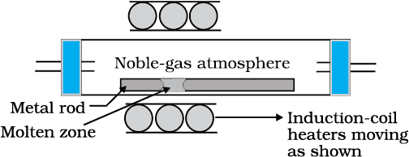
Fig. 6.7: Zone refining process
(e) Vapour phase refining
In this method, the metal is converted into its volatile compound and collected elsewhere. It is then decomposed to give pure metal. So, the two requirements are:
(i) the metal should form a volatile compound with an available reagent,
(ii) the volatile compound should be easily decomposable, so that the recovery is easy.
Following examples will illustrate this technique.
Mond Process for Refining Nickel: In this process, nickel is heated in a stream of carbon monoxide forming a volatile complex, nickel tetracarbonyl:
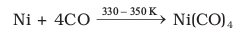 (6.54)
The carbonyl is subjected to higher temperature so that it is decomposed giving the pure metal:
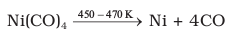 (6.55)
van Arkel Method for Refining Zirconium or Titanium: This method is very useful for removing all the oxygen and nitrogen present in the form of impurity in certain metals like Zr and Ti. The crude metal is heated in an evacuated vessel with iodine. The metal iodide being more covalent, volatilises:
Zr + 2I2 → ZrI4 (6.56)
The metal iodide is decomposed on a tungsten filament, electrically heated to about 1800K. The pure metal is thus deposited on the filament.
ZrI4 → Zr + 2I2 (6.57)
(f) Chromatographic methods
This method is based on the principle that different components of a mixture are differently adsorbed on an adsorbent. The mixture is put in a liquid or gaseous medium which is moved through the adsorbent. Different components are adsorbed at different levels on the column. Later the adsorbed components are removed (eluted) by using suitable solvents (eluant). Depending upon the physical state of the moving medium and the adsorbent material and also on the process of passage of the moving medium, the chromatographic method* is given the name. In one such method the column of Al2O3 is prepared in a glass tube and the moving medium containing a solution of the components is in liquid form. This is an example of column chromatography. This is very useful for purification of the elements which are available in minute quantities and the impurities are not very different in chemical properties from the element to be purified. There are several chromatographic techniques such as paper chromatography, column chromatography, gas chromatography, etc. Procedures followed in column chromatography have been depicted in Fig. 6.8.
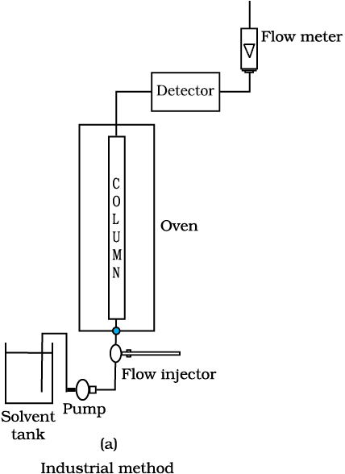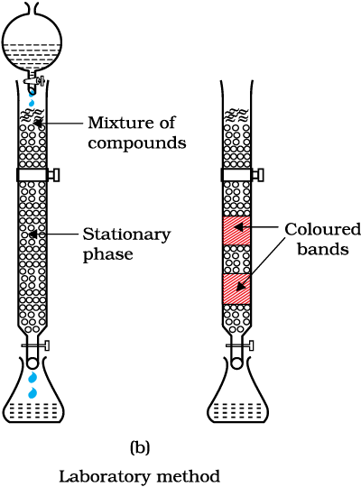
Fig. 6.8: Schematic diagrams showing column chromatography
*Looking it the other way, chromatography in general, involves a mobile phase and a stationary phase. The sample or sample extract is dissolved in a mobile phase. The mobile phase may be a gas, a liquid or a supercritical fluid. The stationary phase is immobile and immiscible (like the Al 2 O 3 column in the example of column chromatography above). The mobile phase is then forced through the stationary phase. The mobile phase and the stationary phase are chosen such that components of the sample have different solubilities in the two phases. A component which is quite soluble in the stationary phase takes longer time to travel through it than a component which is not very soluble in the stationary phase but very soluble in the mobile phase. Thus sample components are separated from each other as they travel through the stationary phase. Depending upon the two phases and the way sample is inserted/injected, the chromatographic technique is named. These methods have been described in detail in Unit 12 of Class XI text book (12.8.5).
6.8 Uses of Aluminium, Copper, Zinc and Iron
Aluminium foils are used as wrappers for chocolates. The fine dust of the metal is used in paints and lacquers. Aluminium, being highly reactive, is also used in the extraction of chromium and manganese from their oxides. Wires of aluminium are used as electricity conductors. Alloys containing aluminium, being light, are very useful.
Summary
Metals are required for a variety of purposes. For this, we need their extraction from the minerals in which they are present and from which their extraction is commercially feasible.These minerals are known as ores. Ores of the metal are associated with many impurities. Removal of these impurities to certain extent is achieved in concentration steps. The concentrated ore is then treated chemically for obtaining the metal. Usually the metal compounds (e.g., oxides, sulphides) are reduced to the metal. The reducing agents used are carbon, CO or even some metals. In these reduction processes, the thermodynamic and electrochemical concepts are given due consideration. The metal oxide reacts with a reducing agent; the oxide is reduced to the metal and the reducing agent is oxidised. In the two reactions, the net Gibbs energy change is negative, which becomes more negative on raising the temperature. Conversion of the physical states from solid to liquid or to gas, and formation of gaseous states favours decrease in the Gibbs energy for the entire system. This concept is graphically displayed in plots of ΔG0 vs T (Ellingham diagram) for such oxidation/reduction reactions at different temperatures. The concept of electrode potential is useful in the isolation of metals (e.g., Al, Ag, Au) where the sum of the two redox couples is +ve so that the Gibbs energy change is negative. The metals obtained by usual methods still contain minor impurities. Getting pure metals require refining. Refining process depends upon the differences in properties of the metal and the impurities. Extraction of aluminium is usually carried out from its bauxite ore by leaching it with NaOH. Sodium aluminate, thus formed, is separated and then neutralised to give back the hydrated oxide, which is then electrolysed using cryolite as a flux. Extraction of iron is done by reduction of its oxide ore in blast furnace. Copper is extracted by smelting and heating in a reverberatory furnace. Extraction of zinc from zinc oxides is done using coke. Several methods are emplOyed n refining the metal. Metals, in general, are very widely used and have contributed significantly in the development of a variety of industries.
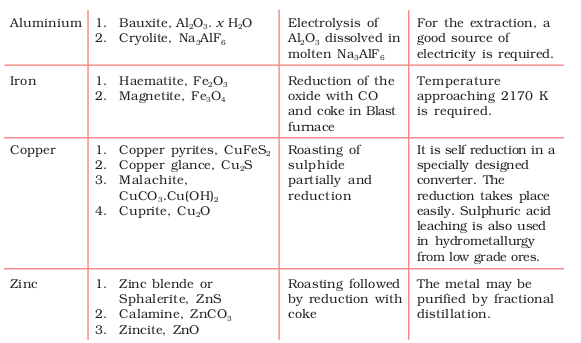
Exercises
6.1 Copper can be extracted by hydrometallurgy but not zinc. Explain.
6.2 What is the role of depressant in froth floatation process?
6.3 Why is the extraction of copper from pyrites more difficult than that from its oxide ore through reduction?
6.4 Explain: (i) Zone refining (ii) Column chromatography.
6.5 Out of C and CO, which is a better reducing agent at 673 K ?
6.6 Name the common elements present in the anode mud in electrolytic refining of copper. Why are they so present ?
6.7 Write down the reactions taking place in different zones in the blast furnace during the extraction of iron.
6.8 Write chemical reactions taking place in the extraction of zinc from zinc blende.
6.9 State the role of silica in the metallurgy of copper.
6.10 What is meant by the term "chromatography"?
6.11 What criterion is followed for the selection of the stationary phase in chromatography?
6.12 Describe a method for refining nickel.
6.13 How can you separate alumina from silica in a bauxite ore associated with silica? Give equations, if any.
6.14 Giving examples, differentiate between 'roasting' and 'calcination'.
6.15 How is 'cast iron' different from 'pig iron"?
6.16 Differentiate between "minerals" and "ores".
6.17 Why copper matte is put in silica lined converter?
6.18 What is the role of cryolite in the metallurgy of aluminium?
6.19 How is leaching carried out in case of low grade copper ores?
6.20 Why is zinc not extracted from zinc oxide through reduction using CO?
6.21 The value of ΔfG0 for formation of Cr2 O3 is – 540 kJmol−1and that of Al2 O3 is – 827 kJmol−1. Is the reduction of Cr2 O3 possible with Al ?
6.22 Out of C and CO, which is a better reducing agent for ZnO ?
6.23 The choice of a reducing agent in a particular case depends on thermodynamic factor. How far do you agree with this statement? Support
your opinion with two examples.
6.24 Name the processes from which chlorine is obtained as a by-product. What will happen if an aqueous solution of NaCl is subjected to electrolysis?
6.25 What is the role of graphite rod in the electrometallurgy of aluminium?
6.26 Outline the principles of refining of metals by the following methods:
(i) Zone refining
(ii) Electrolytic refining
(iii) Vapour phase refining
6.27 Predict conditions under which Al might be expected to reduce MgO.
(Hint: See Intext question 6.4)
Answers to Some Intext Questions
6.1 Ores in which one of the components (either the impurity or the actual ore) is magnetic can be concentrated, e.g., ores containing iron (haematite, magnetite, siderite and iron pyrites).
6.2 Leaching is significant as it helps in removing the impurities like SiOstyle="width:40%"2, Fe2O3, etc. from the bauxite ore.
6.3 Certain amount of activation energy is essential even for such reactions which are thermodynamically feasible, therefore heating is required.
6.4 Yes, below 1350°C Mg can reduce Al2O3 and above 1350°C, Al can reduce MgO. This can be inferred from ΔG0 Vs T plots (Fig. 6.4).